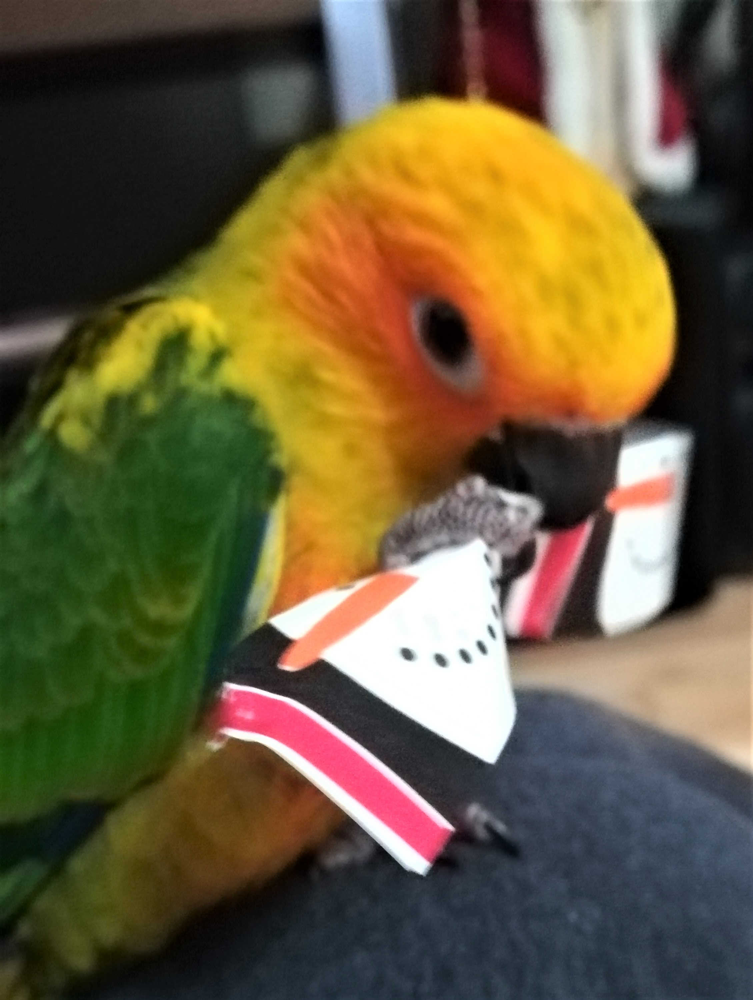

Bienvenue
Photo: Émilie Lombard
Bonjour chers internautes,
Je souhaiterais d'abord me présenter : je m'appelle Émilie et je suis une bloggeuse débutante. Ce site web porte sur les perroquets. Ce sont de petites bêtes très sous-estimées qui mérites d’être connues, non seulement pour notre propre savoir, mais aussi pour leur bien
Peut-être êtes-vous tombés sur ce blog par erreur ou par hasard, mais si le cœur vous en dit, je vous invite à lire l'un de mes articles et à, vous aussi, partager vos expériences sur le sujet abordé par l'entremise d'un commentaire !
Pourquoi ce site?
La majorité des gens s'indigneraient de voir un chien attaché dans une cour pour toute sa vie. Alors pourquoi faire la même chose à un perroquet? Les perroquets sont des animaux très affectueux et incroyablement intelligents, dont le comportement et la fidélité sont très semblables à ceux de nos amis à quatre pattes. Enfermer un oiseau dans une cage sans le laisser sortir, sans jouer avec lui, ce n'est pas seulement triste :c'est cruel.
La plupart des personnes que j'ai rencontré ne connaisent rien sur les oiseaux. Ils ignorent à quel point ce sont des animaux ingénieux, sociaux et fragiles. Aveuglés par leur ignorance, nombreux sont ceux qui vont acheter ou adopter un perroquet pour leur beauté, pour en faire des décorations.
Ça me brise le coeur de savoir que certains oiseaux passent leur vie en cage, seuls et tristes.
Ce site web est bien entendu un devoir pour l'école, mais ce qui y est dit est la plus stricte vérité et j'invite les lecteurs à s'informer sur le sujet.
De plus, je tiens à informer les gens sur les moyens les plus humains d'adopter un perroquet, étant donné que plusieurs ignorent le fléau de la contrebande d'animaux exotiques. Par exemple, j'ai été chercher ma conure Maggie dans un élevage de Mirabel où le bien-être des oiseaux est leur priorité. Je m'y suis rendu en personne afin de m'assurer que les animaux étaient bien traités et nourris à la main.
Pour moi, ce blog est non seulement un moyen de m'exprimer, mais aussi un d'avoir des discussions fascinantes et authentiques avec des gens provenant des quatre coins du monde.
Si vous êtes ici, c'est pour vous informer ou échanger sur des sujets reliés à nos petites bêtes à plumes.
Avant d'aller plus loin...
Certes, c'est un site Web public et je vous invite fortement à vous s'exprimer et à devenir membre, mais il est important de prendre connaissance de cette importante règle :
-Soyez respectueux. Tout le monde à le droit à son opinion. Il est évidemment inéluctable que vous rencontreriez quelqu'un qui ne pense pas comme vous, que ce soit sur ce site ou ailleurs. Bien sur, vous avez le droit de donner votre avis, cela peut même mener à des débats très intéressants, mais tout échange doit être fait avec respect.